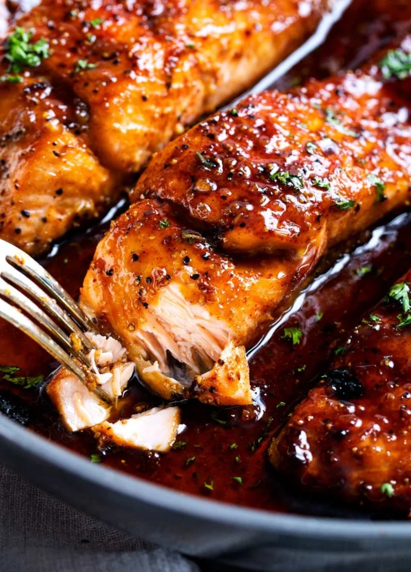

How to prepare the perfect salmon

Description
This honey roasted salmon brings in the perfect
blend of sweet and savory!
Ingredients
SALMON
- 4 (6 oz each) salmon filets
- 1/2 tsp kosher salt
- 1/2 tsp kosher salt
- 1/2 tsp smoked paprika
- 1/4 tsp blackening seasoning
SAUCE
- 3 Tbsp butter
- 2 tsp olive oil
- 6 cloves of garlic
- 1/2 cup honey
- 3 Tbsp Water
- 3 Tbsp Soy Sauce
- 1 Tbsp Sriracha
- 2 Tbsp lemon juice
Steps
- Pat salmon dry, then season with salt, pepper, paprika and blackening seasoning (if using). Set aside. Adjust oven rack to middle position, then preheat broiler.
- Add butter and oil to a large, oven-safe skillet over MED-HIGH heat. Once butter is melted, add garlic, water, soy sauce, sriracha, honey and lemon juice and cook 30 seconds or so, until sauce is heated through.
- Add salmon, skin side down (if using salmon with skin), and cook 3 minutes. While salmon cooks, baste frequently with sauce from the pan by spooning it over the top of the salmon.
- Broil salmon for 5-6 minutes, basting with sauce once during the broil, until salmon is caramelized and cooked to desired doneness.
- Garnish with minced parsley if desired.